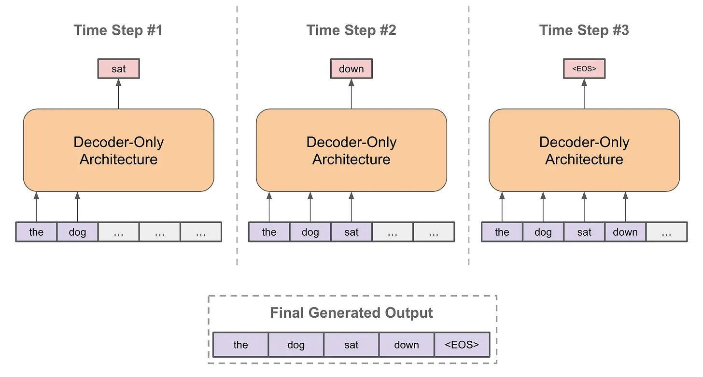
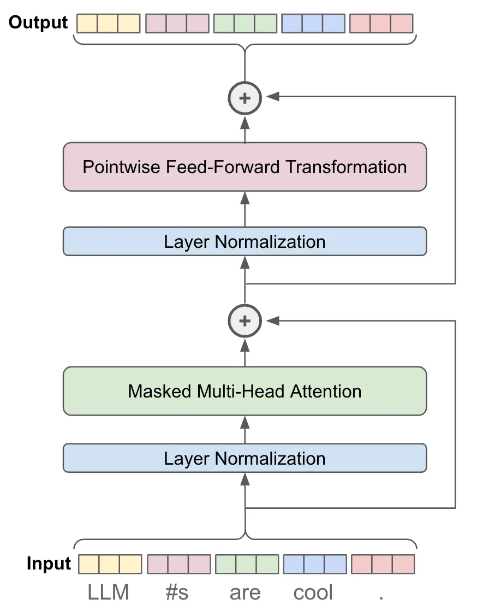
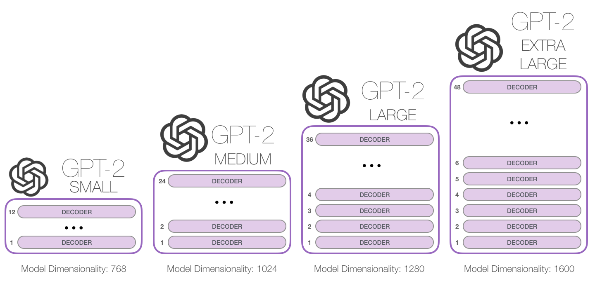
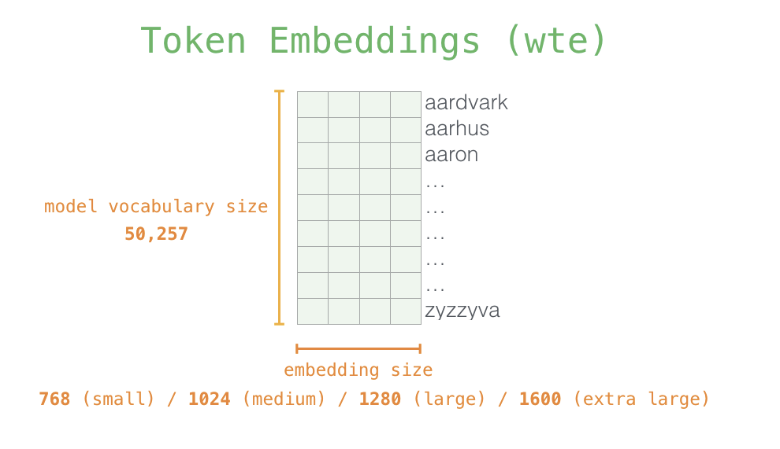
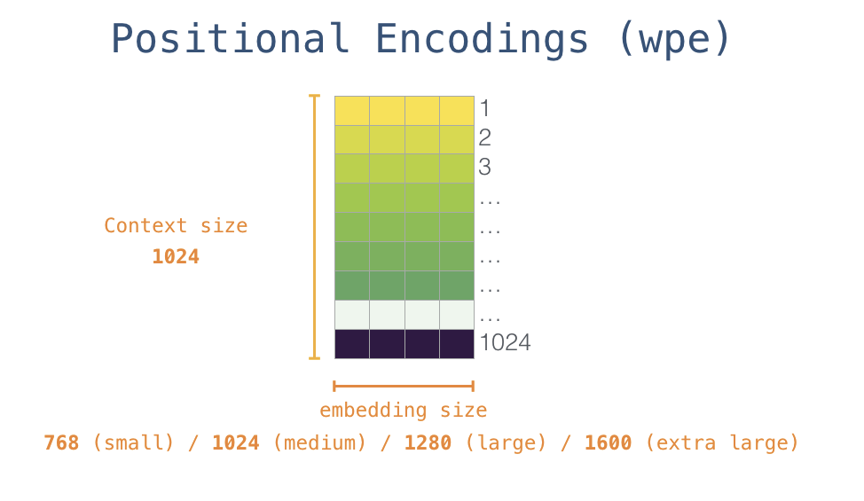
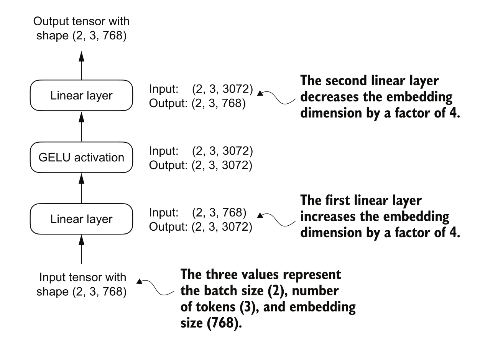
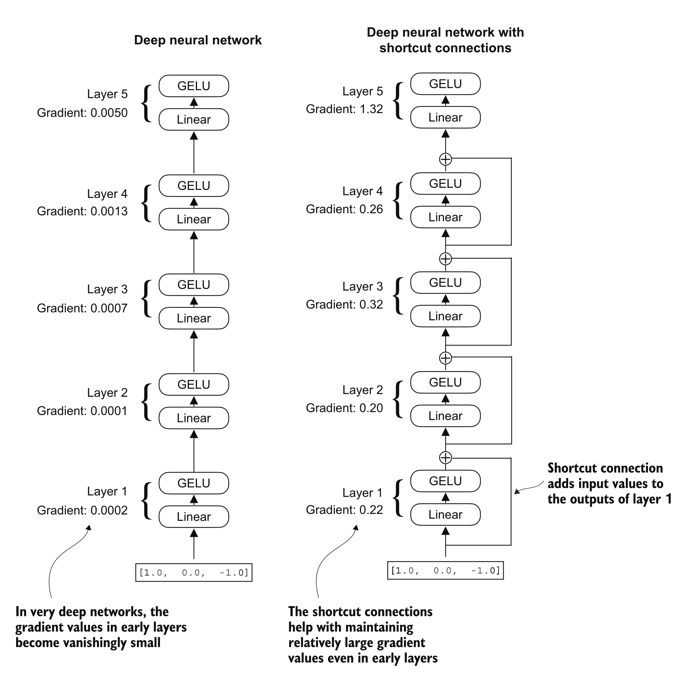
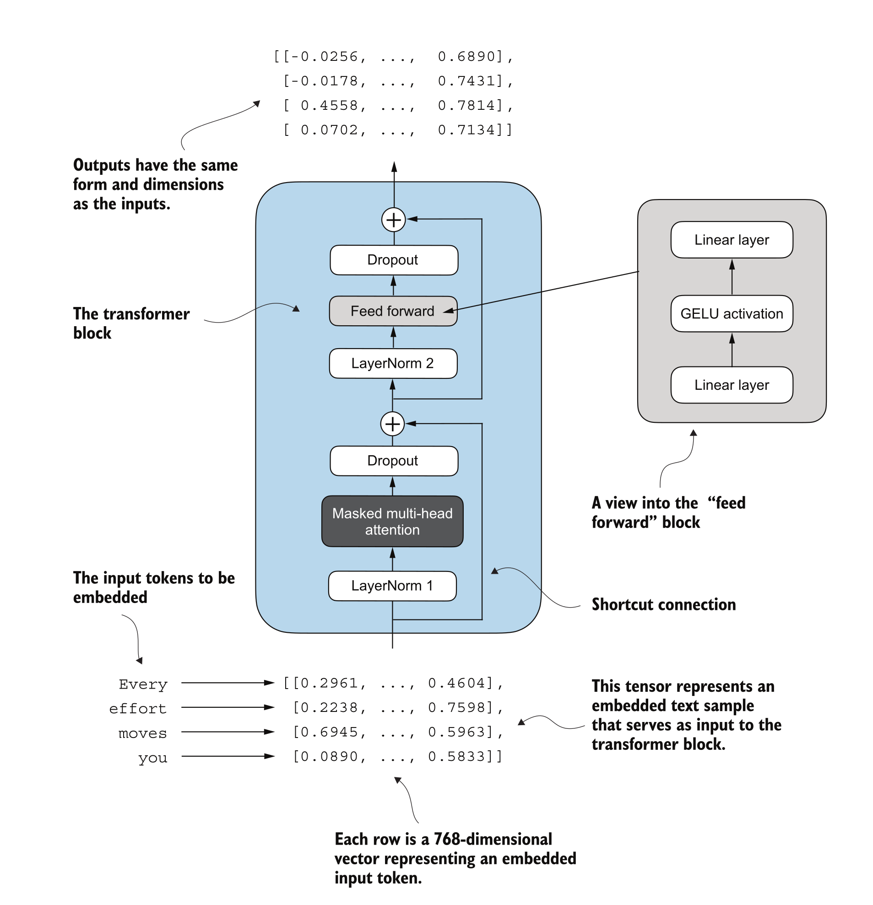

Independent set of learned weight matrices (Wq, Wk, Wv) and output vector for each head.
Concatenate all to produce one context vector for each token.
Multiple heads -> attend to input sentence simultaneously -> different relationships and patterns in the data.
GPT-2 Model - Architecture and Implementation
Generative Pre-trained Transformer (GPT)
RadFord et al., 2019
Decoder only Transformer architecture, pre-trained on large corpus of text data (40GB of internet text) using self-supervised next-token prediction.
Demonstrated that general purpose models for textual understanding are incredibly effective without using any task-specific architectures or modifications
Language Modeling Objective
Predict the next token in a sequence given all previous tokens
\[P(x_t) = ∏ P(x_t | x_1, ..., x_{t-1})\]
Auto-regressive Text Generation
Given a prompt, GPT-2 generates text one token at a time
At each step, the model predicts the next token based on all previous tokens
The predicted token is appended to the input sequence for the next prediction

GPT-2 Architecture
GPT model stacks multiple transformer decoder blocks
Each block has:
Masked Multi-Head Self-Attention layer
Feed-Forward Neural Network (FFN)
Layer Normalization and Residual Connections
Final output layer
Ref : Radford et al., 2019 “Language Models are Unsupervised Multitask Learners”
Detailed GPT-2 Architecture


GPT_CONFIG_124M = {# 50000 BPE merges + 256 byte tokens + 1 special token"vocab_size": 50257, # max length of input sequences"context_length": 1024, "emb_dim": 768,"n_heads": 12,"n_layers": 12,"drop_rate": 0.1,"qkv_bias": False}
Inputs to the GPT-2 Model
Input Text -> Tokenization -> Token IDs
Input Encodings:
Token Embeddings: Represent the meaning of each token
Positional Encodings: Represent the position of each token in the sequence
Combined to form the input to the first transformer block


Inputs to the GPT-2 Model
Transformers have no inherent notion of sequence order, Without positional info, ‘dog bites man’ = ‘man bites dog’ to the model
GPT-2 uses LEARNED positional embeddings (vs sinusoidal in original Transformer)
Both embeddings are simply added element-wise (not concatenated)
Layer Normalization
Gradient explosion/vanishing issues in deep networks
Normalizes (centers) inputs across features for each token to have zero mean and unit variance
Stabilizes training and improves convergence
In GPT-2, applied before self-attention and feed-forward layers (Pre-LN)
Hidden layer size is 4 times the input/output size (3072 for GPT-2 small)
Applies non-linear transformation to each token’s representation independently

Why 4x?
Empirically found to work well
FFN layers contain most of the model’s parameters!
For GPT-2 small: FFN has 768 -> 3072 -> 768, that’s 768 * 3072 * 2 ≈ 4.7M params per block
12 blocks × 4.7 M ≈ 56M params just in FFNs (almost half the model)
Residual Connections
Help mitigate vanishing gradient problems in deep networks
Add the input of a layer to its output before passing to the next layer
Gradients get progressively smaller as they backpropagate through layers
Preserve information from earlier layers, helping training stability

Connecting it all : Transformer Block in GPT-2
We have implemented the key components of a transformer block used in GPT-2:
Connecting it all : Transformer Block in GPT-2
12 Transformer blocks are stacked in GPT-2 small

Transformer Block in GPT-2
def forward(self, x): shortcut = x x =self.norm1(x) x =self.att(x) x =self.dropout(x) x = x + shortcut shortcut = x x =self.norm2(x) x =self.ff(x) x =self.dropout(x) x = x + shortcutreturn x
GPT-2 Model Implementation
We have all the components to implement GPT-2 from scratch